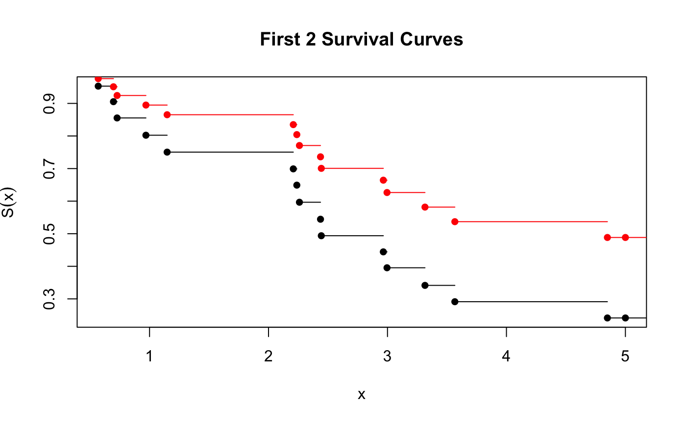

This vignette is an introduction to performing survival analysis in mlr3proba.
Survival analysis is a sub-field of supervised machine learning in which the aim is to predict the survival distribution of a given individual. Arguably the main feature of survival analysis is that unlike classification and regression, learners are trained on two features: 1. the time until the event takes place, 2. the event type: either censoring or death. At a particular time-point, an individual is either: alive, dead, or censored. Censoring occurs if it is unknown if an individual is alive or dead. For example, say we are interested in patients in hospital and every day it is recorded if they are alive or dead, then after a patient leaves it is unknown if they are alive or dead, hence they are censored.
In the case that there is no censoring, but a predicted probability distribution is still the goal, then probabilistic regression learners are advised instead.
Unlike TaskClassif and TaskRegr which have a single ‘target’ argument, TaskSurv mimics the survival::Surv object and has three-four target arguments (dependent on censoring type)
library(mlr3proba); library(mlr3); library(survival)
# type = "right" is default
TaskSurv$new(id = "right_censored", backend = survival::rats,
time = "time", event = "status", type = "right")
#> <TaskSurv:right_censored> (300 x 5)
#> * Target: time, status
#> * Properties: -
#> * Features (3):
#> - int (1): litter
#> - dbl (1): rx
#> - chr (1): sex
task = TaskSurv$new(id = "interval_censored", backend = survival::bladder2[,-c(1, 7)],
time = "start", time2 = "stop", type = "interval2")
task
#> <TaskSurv:interval_censored> (178 x 6)
#> * Target: start, stop
#> * Properties: -
#> * Features (4):
#> - dbl (2): enum, rx
#> - int (2): number, size
task$truth()[1:10]
#> [1] [0, 1] [0, 4] [0, 7] [0, 10] [0, 6] [6, 10] [0, 14] [0, 18] [0, 5]
#> [10] [5, 18]
# create task and learner
veteran = mlr3misc::load_dataset("veteran", package = "survival")
task_veteran = TaskSurv$new(id = "veteran", backend = veteran, time = "time", event = "status")
learner = lrn("surv.coxph")
# train/test split
train_set = sample(task_veteran$nrow, 0.8 * task_veteran$nrow)
test_set = setdiff(seq_len(task_veteran$nrow), train_set)
# fit Cox PH and inspect model
learner$train(task_veteran, row_ids = train_set)
learner$model
#> Call:
#> survival::coxph(formula = task$formula(), data = task$data(),
#> x = TRUE)
#>
#> coef exp(coef) se(coef) z p
#> age -0.007685 0.992345 0.011751 -0.654 0.513130
#> celltypesmallcell 0.976473 2.655076 0.317421 3.076 0.002096
#> celltypeadeno 1.173923 3.234657 0.354138 3.315 0.000917
#> celltypelarge 0.460501 1.584868 0.334837 1.375 0.169039
#> diagtime 0.001186 1.001187 0.009848 0.120 0.904155
#> karno -0.029826 0.970614 0.006497 -4.590 4.42e-06
#> prior 0.010400 1.010454 0.026531 0.392 0.695071
#> trt 0.225305 1.252705 0.247522 0.910 0.362695
#>
#> Likelihood ratio test=47.36 on 8 df, p=1.307e-07
#> n= 109, number of events= 100
# make predictions for new data
prediction = learner$predict(task_veteran, row_ids = test_set)
prediction
#> <PredictionSurv> for 28 observations:
#> row_id time status crank distr lp
#> 3 228 TRUE -0.6936862 <VectorDistribution> -0.6936862
#> 4 126 TRUE -0.7746938 <VectorDistribution> -0.7746938
#> 8 110 TRUE -1.4899216 <VectorDistribution> -1.4899216
#> ---
#> 119 7 TRUE 1.1495552 <VectorDistribution> 1.1495552
#> 128 19 TRUE 0.9844033 <VectorDistribution> 0.9844033
#> 137 49 TRUE 0.8945899 <VectorDistribution> 0.8945899Every PredictionSurv object can predict one or more of:
lp - Linear predictor calculated as the fitted coefficients multiplied by the test data.distr - Predicted survival distribution, either discrete or continuous. Implemented in distr6.crank - Continuous risk ranking.lp and crank can be used with measures of discrimination such as the concordance index. Whilst lp is a specific mathematical prediction, crank is any continuous ranking that identifies who is more or less likely to experience the event. So far the only implemented learner that only returns a continuous ranking is surv.svm. If a PredictionSurv returns an lp then the crank is identical to this. Otherwise crank is calculated as the expectation of the predicted survival distribution. Note that for linear proportional hazards models, the ranking (but not necessarily the crank score itself) given by lp and the expectation of distr, is identical.
# In the previous example, Cox model predicts `lp` so `crank` is identical
all(prediction$lp == prediction$crank)
#> [1] TRUE
prediction$lp[1:10]
#> [1] -0.69368619 -0.77469379 -1.48992162 -1.02294630 0.10603704 0.35349280
#> [7] 0.19769846 -0.24070498 1.61950353 0.02121054
# These are evaluated with measures of discrimination and calibration.
# As all PredictionSurv objects will return crank, Harrell's C is the default measure.
prediction$score()
#> surv.harrellC
#> 0.7526596
# distr is evaluated with probabilistic scoring rules.
measure = lapply(c("surv.graf", "surv.grafSE"), msr)
prediction$score(measure)
#> surv.graf surv.grafSE
#> 0.1249958 0.0129813
# Often measures can be integrated over mutliple time-points, or return
# predictions for single time-points
measure = msr("surv.graf", times = 60)
prediction$score(measure)
#> surv.graf
#> 0.1457346Predicted distributions are implemented in distr6, which contains functionality for plotting and further analysis of probability distributions. See here for full tutorials. Briefly we will go over the most important parts for mlr3proba.
task = tgen("simsurv")$generate(20)
learner = lrn("surv.coxph")
# In general it is not advised to train/predict on same data
prediction = learner$train(task)$predict(task)
# The predicted `distr` is a VectorDistribution consisting of 300 separate distributions
prediction$distr
#> WeightDisc1 WeightDisc2 ... WeightDisc19 WeightDisc20
# These can be extracted and queried either invidually...
prediction$distr[1]$survival(60:70)
#> [1] 0 0 0 0 0 0 0 0 0 0 0
prediction$distr[1]$mean()
#> [1] 1.694734
# ...or together
prediction$distr$cdf(60)[,1:10]
#> WeightDisc1 WeightDisc2 WeightDisc3 WeightDisc4 WeightDisc5 WeightDisc6
#> 1: 1 1 1 1 1 1
#> WeightDisc7 WeightDisc8 WeightDisc9 WeightDisc10
#> 1: 1 1 1 1
prediction$distr$mean()[,1:10]
#> WeightDisc1 WeightDisc2 WeightDisc3 WeightDisc4 WeightDisc5 WeightDisc6
#> 1: 1.694734 1.259515 1.490812 1.630679 1.756059 1.724937
#> WeightDisc7 WeightDisc8 WeightDisc9 WeightDisc10
#> 1: 1.680944 1.753342 1.662975 1.696142
# As well as plotted
plot(prediction$distr[1], "survival", main = "First 2 Survival Curves")
lines(prediction$distr[2], "survival", col = 2)
Finally we take a look at the PipeOps implemented in mlr3proba, which are used for composition of predict types. For example, if a learner only returns a linear predictor, then PipeOpDistrCompositor can be used to estimate a survival distribution. Or, if a learner returns a distr then PipeOpCrankCompositor can be used to estimate crank from distr. See mlr3pipelines for full tutorials and details on PipeOps.
library(mlr3pipelines)
# PipeOpDistrCompositor - Train one model with a baseline distribution,
# (Kaplan-Meier or Nelson-Aalen), and another with a predicted linear predictor.
leaner_lp = lrn("surv.glmnet")
leaner_distr = lrn("surv.kaplan")
prediction_lp = leaner_lp$train(task)$predict(task)
prediction_distr = leaner_distr$train(task)$predict(task)
prediction_lp$distr
#> NULL
# Doesn't need training. Base = baseline distribution. ph = Proportional hazards.
pod = po("distrcompose", param_vals = list(form = "ph", overwrite = FALSE))
prediction = pod$predict(list(base = prediction_distr, pred = prediction_lp))$output
# Now we have a predicted distr!
prediction$distr
#> WeightDisc1 WeightDisc2 ... WeightDisc19 WeightDisc20
# This can all be simplified by using the distrcompose wrapper
cvglm.distr = distrcompositor(learner = lrn("surv.cvglmnet"),
estimator = "kaplan",
form = "aft",
overwrite = FALSE)
cvglm.distr$train(task)$predict(task)
#> <PredictionSurv> for 20 observations:
#> row_id time status crank distr lp
#> 1 5.000000 FALSE 0 <VectorDistribution> 0
#> 2 3.315270 TRUE 0 <VectorDistribution> 0
#> 3 2.437066 TRUE 0 <VectorDistribution> 0
#> ---
#> 18 2.443796 TRUE 0 <VectorDistribution> 0
#> 19 1.147798 TRUE 0 <VectorDistribution> 0
#> 20 2.237981 TRUE 0 <VectorDistribution> 0Note that a PredictionSurv will always return crank, but this may either be the same as the lp or the expectation of distr. This compositor allows you to change the estimation method.
# PipeOpCrankCompositor - Only one model required.
leaner = lrn("surv.coxph")
prediction = leaner$train(task)$predict(task)
# Doesn't need training - Note: no `overwrite` option as `crank` is always
# present so the compositor if used will always overwrite.
poc = po("crankcompose", param_vals = list(method = "mean"))
composed_prediction = poc$predict(list(prediction))$output
# Note that whilst the actual values of `lp` and `crank` are different,
# the rankings are the same, so discrimination measures are unchanged.
prediction$crank[1:10]
#> [1] 0.04693194 -0.63793218 -0.31431717 -0.08493555 0.22640509 0.74479092
#> [7] 0.01584090 0.65489498 -0.02211346 0.05022105
composed_prediction$crank[1:10]
#> [1] 1.694734 1.259515 1.490812 1.630679 1.756059 1.724937 1.680944 1.753342
#> [9] 1.662975 1.696142
all(order(prediction$crank) == order(composed_prediction$crank))
#> [1] FALSE
cbind(Original = prediction$score(), Composed = composed_prediction$score())
#> Original Composed
#> surv.harrellC 0.55 0.5444444
# Again a wrapper can be used to simplify this
crankcompositor(lrn("surv.coxph"), method = "mean")$train(task)$predict(task)
#> <PredictionSurv> for 20 observations:
#> row_id time status crank distr lp
#> 1 5.000000 FALSE 1.694734 <VectorDistribution> 0.04693194
#> 2 3.315270 TRUE 1.259515 <VectorDistribution> -0.63793218
#> 3 2.437066 TRUE 1.490812 <VectorDistribution> -0.31431717
#> ---
#> 18 2.443796 TRUE 1.551264 <VectorDistribution> -0.22103464
#> 19 1.147798 TRUE 1.621698 <VectorDistribution> -0.10144647
#> 20 2.237981 TRUE 1.777548 <VectorDistribution> 0.52638534Putting all of this together we can perform a (overly simplified) benchmark experiment to find the best learner for making predictions on a simulated dataset.
library(mlr3pipelines); library(mlr3); library(mlr3tuning); library(paradox)
set.seed(42)
task = tgen("simsurv")$generate(20)
composed_lrn_glm = distrcompositor(lrn("surv.glmnet"), "kaplan", "ph")
lrns = lapply(paste0("surv.", c("kaplan", "coxph", "parametric")), lrn)
lrns[[3]]$param_set$values = list(dist = "weibull", type = "ph")
design = benchmark_grid(tasks = task, learners = c(lrns, list(composed_lrn_glm)),
resamplings = rsmp("cv", folds = 2))
bm = benchmark(design)
bm$aggregate(lapply(c("surv.harrellC","surv.graf","surv.grafSE"), msr))[,c(4, 7:9)]
#> learner_id surv.harrellC surv.graf surv.grafSE
#> 1: surv.kaplan 0.5000000 0.2161458 0.04361242
#> 2: surv.coxph 0.6690476 0.2322002 0.07425489
#> 3: surv.parametric 0.3190476 0.5541667 0.10178407
#> 4: surv.kaplan.surv.glmnet.distrcompose 0.7095238 0.3833393 0.12062721